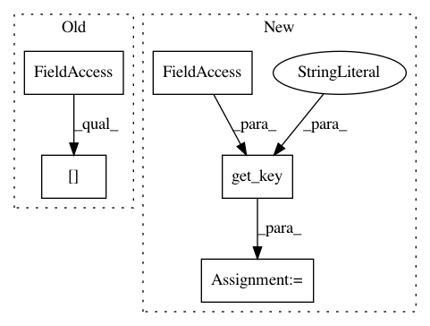

60dfcf812eca79017dced46e1189245c050a3fd6,dl/callbacks.py,OptimizerCallback,on_batch_end,#OptimizerCallback#Any#,393
Before Change
scaled_loss.backward()
master_params = list(
state._optimizer["main"].param_groups[0]["params"])
model_params = list(filter(
lambda p: p.requires_grad,
state.model.parameters()))
After Change
self.accumulation_counter += 1
if not self.fp16:
model = state.model
optimizer = state.get_key(
key="optimizer",
inner_key=self.optimizer_key)
loss = state.get_key(
key="loss",
inner_key=self.loss_key)
loss.backward()
In pattern: SUPERPATTERN
Frequency: 4
Non-data size: 5
Instances
Project Name: Scitator/catalyst
Commit Name: 60dfcf812eca79017dced46e1189245c050a3fd6
Time: 2018-12-10
Author: scitator@gmail.com
File Name: dl/callbacks.py
Class Name: OptimizerCallback
Method Name: on_batch_end
Project Name: Scitator/catalyst
Commit Name: 60dfcf812eca79017dced46e1189245c050a3fd6
Time: 2018-12-10
Author: scitator@gmail.com
File Name: dl/callbacks.py
Class Name: OptimizerCallback
Method Name: on_epoch_end
Project Name: Scitator/catalyst
Commit Name: 81ead4758577679b1be2e9c35f71d1dc1c809c8b
Time: 2019-04-25
Author: scitator@gmail.com
File Name: catalyst/dl/callbacks/base.py
Class Name: LossCallback
Method Name: on_batch_end
Project Name: Scitator/catalyst
Commit Name: 60dfcf812eca79017dced46e1189245c050a3fd6
Time: 2018-12-10
Author: scitator@gmail.com
File Name: dl/callbacks.py
Class Name: OptimizerCallback
Method Name: on_epoch_start